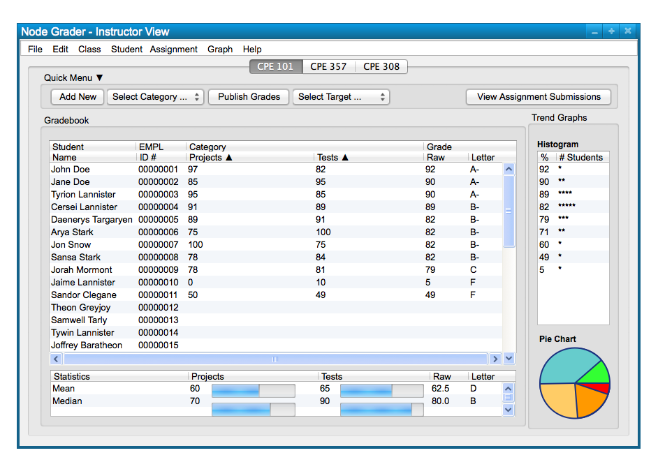
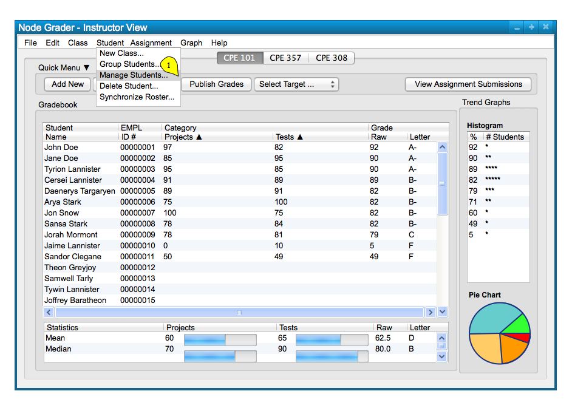
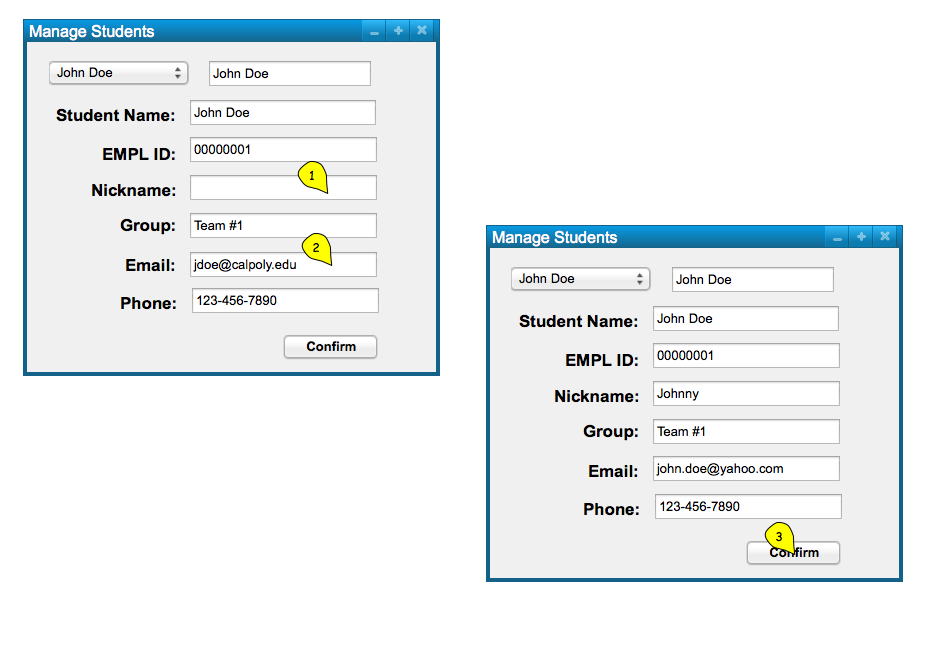

In this scenario, we take a look at how a user modifies students, via the 'Student' menu commands.
Modifying students allows a user to search an individual student and modify the student's course, group, and contact
information. Figure 1 shows a sample class that is ready to search for a student to modify.

Figure 1: Sample Class.
To modify a student, the user chooses the 'Student' menu
command. A list of options appears and the user chooses 'Manage Students' to
bring up a dialog for student modification and management; this takes the form of the following, Figure 2.

Figure 2: Modify Student path.
The dialog response has a dropdown list at the top, as well as a search bar to select students in a list or search for them
by their name or EMPL ID. Figure 3 shows the response to the users selection of the 'Student Manage Students' command.
Figure 3: Modify Student dialog.
Below the dropdown list and search bar are fields for a Student name, EMPL ID, nickname, group, email, and phone number and are confirmed with the 'Confirm' button below. Editing these fields edits the information associated with the student in the course, what group they're in, and how to contact them. Figure 4 shows data being input into these fields.

Figure 4: Modify Student Data.
Upon selecting the 'Confirm' button, the system
displays the spreadsheet in Figure 5, with any changes added. The only changes
that are be displayed in the spreadsheet are changes to the name, EMPL ID, and
nickname for a student.

Figure 5: Modify Student result.
Repeating these functions for modifying students allows a user to tweak student data to
be represented and organized in a way that they better understand and keep track of.